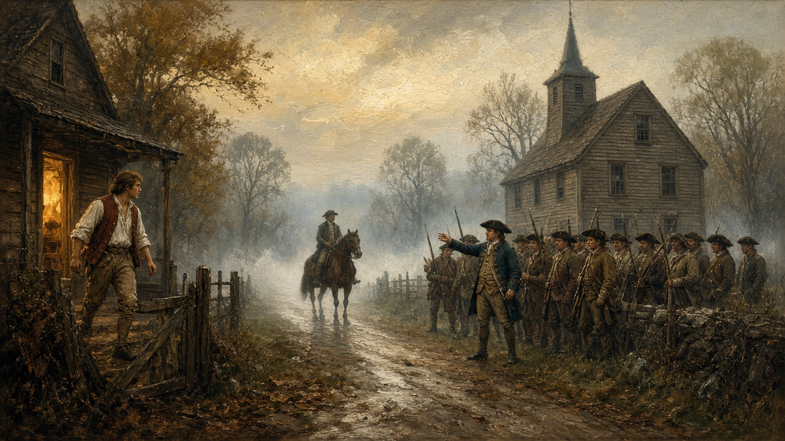

The Tufts Family Across the Generations
This site follows the Tufts family through the generations, from colonial New England onward. It covers the people, the family lines that connect them to descendants today, the places they lived and worked, and the letters and artifacts they left behind. Every statement is tied to a quoted source and a page scan, and anything not yet proven is marked Unverified.
Featured Stories
Winter Hill, April 19, 1775
“Here he was soundly sleeping when Paul Revere came thundering up to the door.” Jones, Under Colonial Roofs, p. 129.

Artist’s interpretation (AI-generated, 2026); not a historical image.Peter Tufts Jr. of Medford
Minute man on the Lexington alarm, Capt. Isaac Hall's company. Mass. Soldiers and Sailors, vol. XVI, p. 137.
Charles Tufts and Walnut Hill
“I will put a light on it.” The land that became Tufts College. Tufts Family History, p. 139.
Anne Adams Tufts
Nursing the wounded after Bunker Hill, as told in a 1909 newspaper account.
Our Standard
Every account here is drawn from primary and documented sources. Each book citation shows a page scan or an exact quote with its printed page number. Where a detail cannot yet be verified, we say so. See Sources.